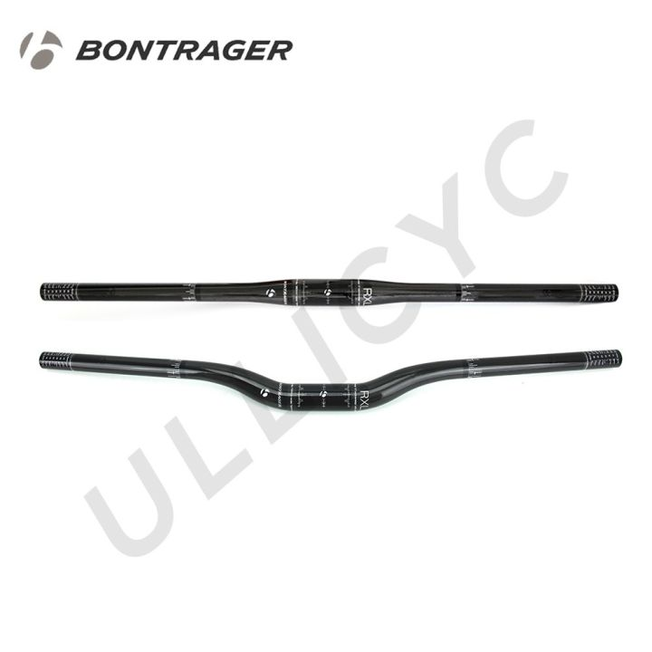

A bicycle handlebar is the steering control for bicycles. It is the equivalent of a tiller for vehicles and vessels, as it is most often directly mechanically linked to a pivoting front wheel via a stem which in turn attaches it to the fork.